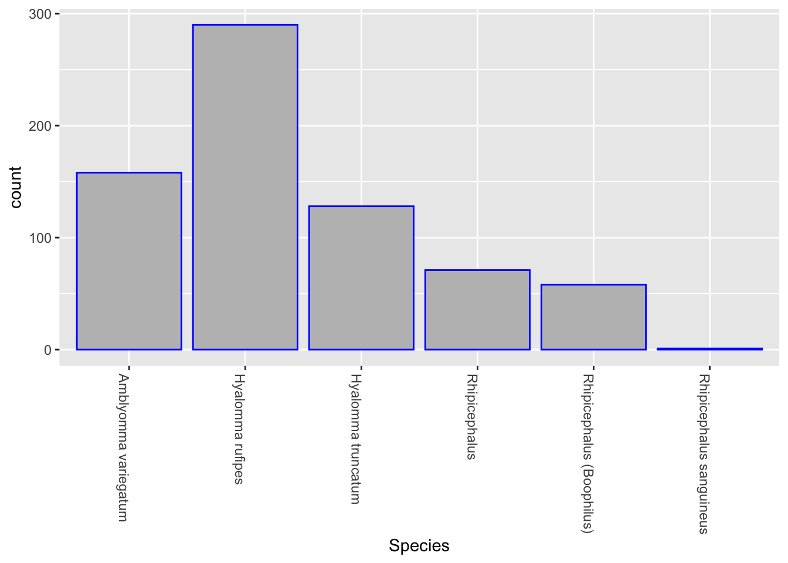

My dataset
This is a data set collected during my Masters degree research. The data contains information on livestock and the ticks collected off them. The ticks were subsequently identified morphologically and the pathogens that these ticks harbored were identified using PCR on extracted nucleic acid.
I’m putting this dataset together in response to [Assignment 2](https://professorpolymorphic.github.io/RobisonWebSite/BCB520/posts/A2-YourData/) from the [BCB 504](https://professorpolymorphic.github.io/RobisonWebSite/BCB520/BCB520.html) class.
Data collection
The data were collected from two parts of Ghana (Greater Accra in the South and Upper East in the North). Sampling sites were carefully chosen based on known climate and environmental conditions that influence arthropods and their ability to transmit pathogens.
Data
The following shows the basic formatting of the data file using the `glimpse()` function:
Code
glimpse(tickdata)Rows: 706
Columns: 15
$ Date <chr> "28/01/2020", NA, NA, NA, NA, NA, NA, NA, NA, NA,…
$ `Field ID` <chr> "GVS-A-T-001", NA, NA, NA, NA, NA, NA, NA, NA, NA…
$ Location <chr> "Burma Camp", NA, NA, NA, NA, NA, NA, NA, NA, NA,…
$ Animal <chr> "Cattle", "Cattle", "Cattle", "Cattle", "Cattle",…
$ AnimalSex <chr> "Female", "Female", "Female", "Female", "Female",…
$ `Age (years)` <chr> "4", NA, NA, NA, NA, NA, NA, NA, NA, NA, NA, NA, …
$ BodyPart <chr> "Anal", "Anal", "Anal", "Anal", "Anal", "Anal", "…
$ `Vector count` <dbl> 10, NA, NA, NA, NA, NA, NA, NA, NA, NA, 2, NA, 3,…
$ `Vector Sex` <chr> "Female", "Female", "Female", "Female", "Male", "…
$ `Lab ID` <chr> "T001", "T002", "T003", "T004", "T005", "T006", "…
$ `RNA Extracted` <chr> "RNA1", "RNA2", "RNA3", "RNA4", "RNA5", "RNA6", "…
$ Species <chr> "Hyalomma rufipes", "Hyalomma rufipes", "Hyalomma…
$ `Rickettsia ` <chr> "Negative", "Negative", "Negative", "Negative", "…
$ `Rickettsia africae` <chr> "Negative", "Negative", "Negative", "Negative", "…
$ CCHFV <chr> "Negative", "Negative", "Negative", "Negative", "…Note that some of the Attributes have `NA` entries. This is a consequence of the data file, and I will fill in those entries and move the data file toward a
[TidyData](https://towardsdatascience.com/what-is-tidy-data-d58bb9ad2458) format as I progress through the course.
Below is the data dictionary for my data file:
Code
tickdata_attributes <- read_excel("TickData_Attributes.xlsx")
options(knitr.kable.NA = '')
knitr::kable(tickdata_attributes,caption='Data Dictionary for the data file Ronald.xlsx')| Attribute | Type | Note |
|---|---|---|
| Date | Ordinal | Day sampling was done |
| Field ID | Ordinal | Unique ID given to livestock from which ticks were off on the field |
| Location | Categorical | Location from which sampling was done |
| Animal | Categorical | Type of livestock samplng tick sampling was done on |
| Animal sex | Categorical | Gender of livestock sampling was done |
| Age (years) | Ordinal | Age of livestock tick sampling was done |
| Body part | Categorical | Part of livestock ticks were collected |
| Vector count | Quantitative | Number of ticks per livestock |
| Vector sex | Quantitative | Sex of tick |
| Lab ID | Ordinal | Unique ID given to tick in the lab after morphological identification |
| RNA extracted | Ordinal | Unique ID given to tick extracts in the lab |
| Species | Categorical | Species of morphologically identified ticks |
| Rickettsia | Quantitative | Results of tick extracts after PCR to detect Rickettsia |
| Rickettsia africae | Quantitative | Results of tick extracts after PCR to detect Rickettsia africae |
| CCHFV | Quantitative | Results of tick extracts after PCR to detect CCHFV |
Data Abstraction
Per this assignment, my ACTION TARGET pair is: Annotate Distribution
Below, I am going to create a visualization of the distribution of ticks species. This is to create a total count of the different species of ticks.
Code
library(ggplot2)
ggplot(tickdata, aes(x=Species)) +
geom_bar(colour="blue", fill="grey", stat="count")